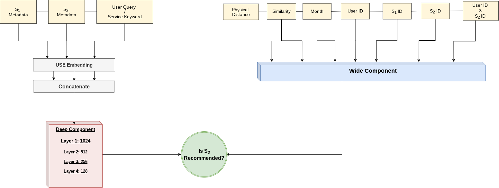

Technological solutions in support of social services access is an important, but somewhat neglected area of innovation. Social services provide a critical safety net for a large portion of the US population. Unfortunately, access to those services is sometimes challenging. Users are often burdened with having to explicitly know precise query keywords to initiate the search process on existing search systems, which may be a challenging task as they may struggle to articulate their complex information needs. Moreover, the resulting services may not be as relevant as those curated by an expert social worker. Thus, it is imperative that system designers approach both interface design and algorithmic implementation from a user-centered standpoint in support of social services access. Motivated by this need, we embarked on a design-thinking process to develop a recommendation system design that integrates knowledge from formal and informal social service navigators to inform the process of recommending relevant social services to users.

In the wide model, we include a number of observable features that we created in order to capture information unique to a user's profile. These features were identified based on the underlying assumption that user needs differ. For instance, a new mother may need access to services on vaccinations or breast-feeding while a user that was recently released from prison might be more focused on housing and employment.
In the deep part, we embed several textual features in order to capture semantic similarities between services especially if a particular service combination has not been referred to a user in the past.
The interface was designed as a tight coupling between the recommender model and the front-end system to support not only end-users seeking social services, but to also integrate formal and informal service provider knowledge.
Research is still on-going.